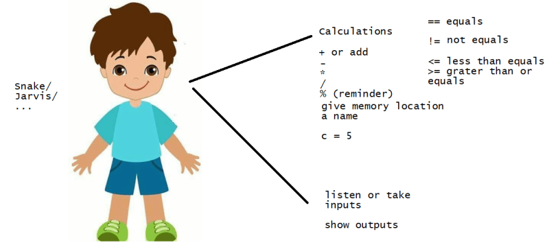

02 Programming Basics-Part 2
Our Character Jarvis and his capabilities

Lets do one more problem solving with Jarvis
- Lets take help of jarvis to solve this problem Refer Here
- But first lets take help of jarvis to print fibonacci series till 100
Hi Jarvis remember 1 as number1 and print it remember 2 as number2 and print it rememer 0 as result Now start calculation till result <= 100 result = number1 + number2 (Add number1 and number2 and store in result) print result number1 = number2 (Assign value of number2 to number1) number2 = result (Assign value of result to number2) - We have only printed fibonnaci series
Hi Jarvis
remember 1 as number1 and print it
remember 2 as number2 and print it
rememer 0 as result
remember 2 as sum
Now start calculation till result <= 4000000
result = number1 + number2 (Add number1 and number2 and store in result)
print result
check if result%2 == 0
if yes add result to sum (sum = sum+result)
number1 = number2 (Assign value of number2 to number1)
number2 = result (Assign value of result to number2)
show output as sum sum
Lets solve one more problem
- The problem is over here
- since Prime factor is difficult for jarvis, lets break this problem into
- finding factors
- finding if number is prime or not
- Lets get jarvis to find factors
Hi Jarvis Remember 100 as number Remember 2 as start_number Repeat till start_number < number/2 check if number%start_number == 0 if yes print start_number increment start_number (start_number = start_number + 1) - Lets get jarvis to find if number is prime number or not
Check_prime:
Hi Jarvis, Take n (3,5,6,7) as number_to_be_check
Remember 2 as index
Remember true as is_prime
Repeat till index < number_to_be_checked
check if number_to_be_checked % index == 0
if yes assign is_prime with false and return value
increment index (index=index+1)
return is_prime
- Now lets combine both conversations
Hi Jarvis Remember 13195 as number Remember 13195/2 as start_number Repeat till start_number > 1 check if number%start_number == 0 if yes and if check_prime(number) is true then print number and stop decrement start_number (start_number = start_number - 1)
Exercise
- Have a conversation with Jarvis to find if the given number is pallindrome
if you give 353 to jarvis he should output pallendrome if you give 100 to jarvis he should output not pallendrome